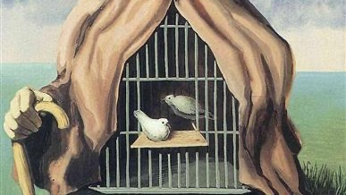
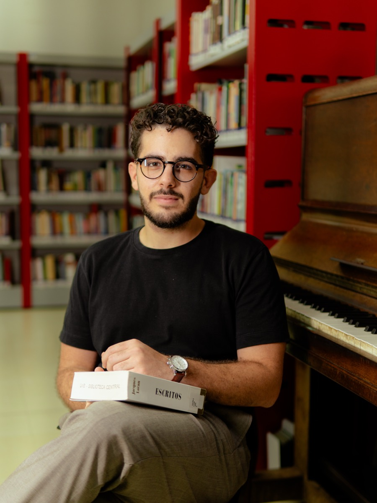

A clínica psicanalítica de Freud a Lacan
Grupo de estudos acerca dos escritos clínicos de Freud a partir de Lacan, Ferenczi, Klein e outros psicanalistas e comentadores.
Psicólogo · Psicanalista
Dizemos muito mais do que imaginamos, e é por isso que precisamos ser escutados.
CRP 01/31836
Hoje em dia, o tempo parece passar cada vez mais rápido. Do trabalho ao lazer, tudo parece atravessado pela necessidade de desempenhar bem. As redes sociais relaxam, mas não descansam. Mostram um mundo apenas com o que acontece de melhor, como aparece por lá. A competitividade é um dos tons que regem as relações sociais, de trabalho, familiares etc. Fica difícil formar laços profundos, ter tempo para pensar, descansar, viver bem.
A psicanálise, desde seu surgimento, olha atentamente para as questões de seu tempo. Desde Freud, a teoria psicanalítica tenta compreender a subjetividade entre os aspectos individuais e sociais que a atravessam.
O encontro entre o particular e o social é o que sempre me encantou na psicanálise. Compreender o que constitui cada sujeito, mas também poder olhar para a cultura e a sociedade e compreendê-la em sua complexidade. Iniciei meus estudos pelas leituras dos textos sociais de Freud e continuo os tendo como esteio em minha prática.
A invenção freudiana nasce da atenção plena ao discurso de cada paciente que ele escutava. Mas também de um olhar sensível ao mundo em que estavam inseridos naquele tempo. Foi assim que a psicanálise nasceu e é desse movimento que ela retira sua capacidade de transformação libertadora.
Trajetória
Me interessei pela psicanálise ainda adolescente. Encontrei em sua teoria um mistério que me animava a continuar estudando. Fui estudar Psicologia na Universidade de Brasília, onde pude me aprofundar na teoria psicanalítica. Lá pude conhecer mais sobre as bases da psicanálise, mas também sobre como ela se relaciona com o mundo. Participei de grupos de pesquisa e desenvolvi projetos de Iniciação Científica. A Universidade também foi o campo fértil onde criei a Liga Acadêmica de Estudos em Psicanálise junto a um coletivo de colegas alunos da graduação. Ao longo de três anos, desenvolvemos grupos de estudos abertos ao público e a colegas de todas as graduações, proporcionando trocas entre diversas áreas do saber.
Nesse período também iniciei o meu percurso de análise pessoal que me permitiu trabalhar em torno do mistério que me habita: fui ter experiência com meu próprio inconsciente. A análise pessoal foi o ponto de virada de minha formação e é também o que me permite exercer a psicanálise, junto à minha formação acadêmica.
Hoje me dedico à pesquisa acerca dos adoecimentos psíquicos relacionados ao trabalho, suas estruturas e tratamentos. Acredito na função edificante do trabalho e é justamente por isso que me interesso pelos mecanismos que fazem o trabalho operar como fator adoecedor para muitas pessoas. Mais além, me interessa construir saídas que apontem para uma melhor relação com o trabalho, com o amor e com a vida.

Clínica do trabalho, psicopatologia e psicanálise.
Atendimentos
Tudo começa com o agendamento de um primeiro encontro. Nele, poderemos nos conhecer, esclarecer questões iniciais e acordar as formas de pagamento, por exemplo. Após esse momento, se você optar por seguir com o tratamento, acertaremos o horário para as próximas sessões.
O método psicanalítico tem como fundamento o inconsciente e seus mecanismos. Isso implica a necessidade de uma técnica específica. Desenvolvida por Freud, a associação livre consiste na fala livre ao analista, de tudo o que vier à cabeça, mesmo que pareça besteira. Do outro lado, o analista escuta atentamente cada palavra do paciente. Sua intervenção se dá ali mesmo no momento da sessão a partir do que é dito.
A psicanálise ficou conhecida como “a cura pela fala”. Isso se dá, pois o nosso psiquismo se constitui a partir de uma relação com a linguagem. É por meio dela que tudo é transmitido: cultura, valores, o próprio nome etc. Ela estrutura e nos posiciona nas relações que temos com as pessoas. As palavras, portanto, guardam as coordenadas daquilo que nos constitui e é a partir delas que podemos encontrar novas rotas e territórios.
Estudo

Grupo de estudos acerca dos escritos clínicos de Freud a partir de Lacan, Ferenczi, Klein e outros psicanalistas e comentadores.
Blog

Sobre os limites do corpo, o aprendizado e a crítica à ciência baseada em evidências.
Sobre a performance como imperativo das subjetividades contemporâneas, a crueza dos dados e o que a psicanálise tem a dizer sobre repetição e atuação.

Sobre tornar-se herdeiro da psicanálise: a falha na imagem da instituição, a escolha entre calar-se e falar, e o que se empresta do Outro.
Agendar